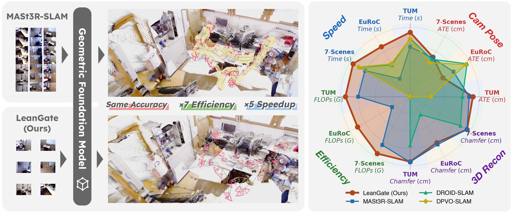
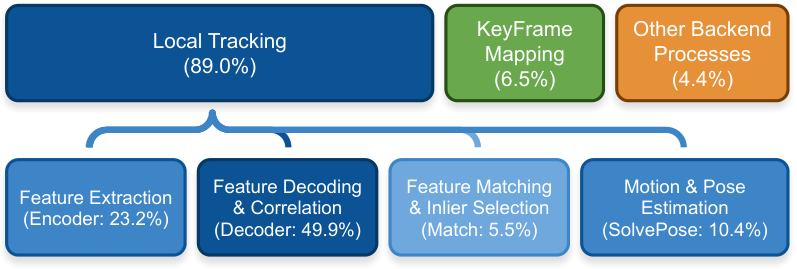
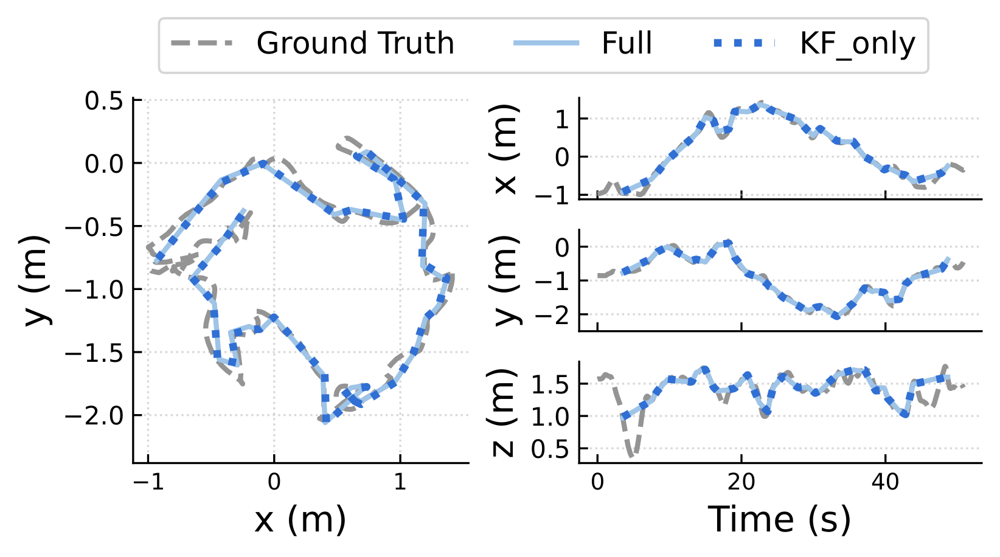
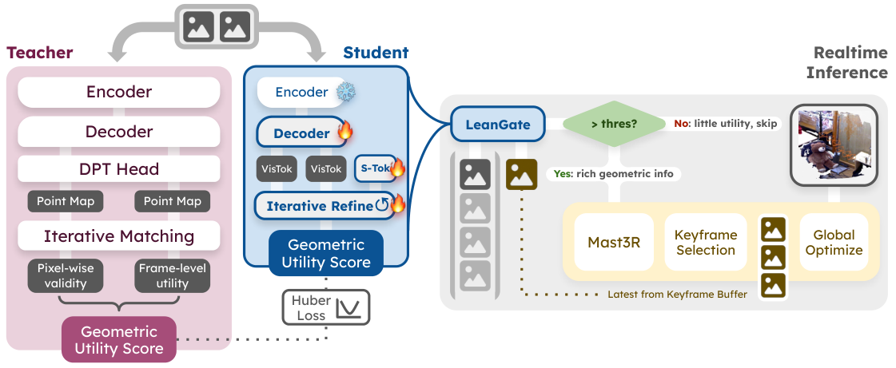
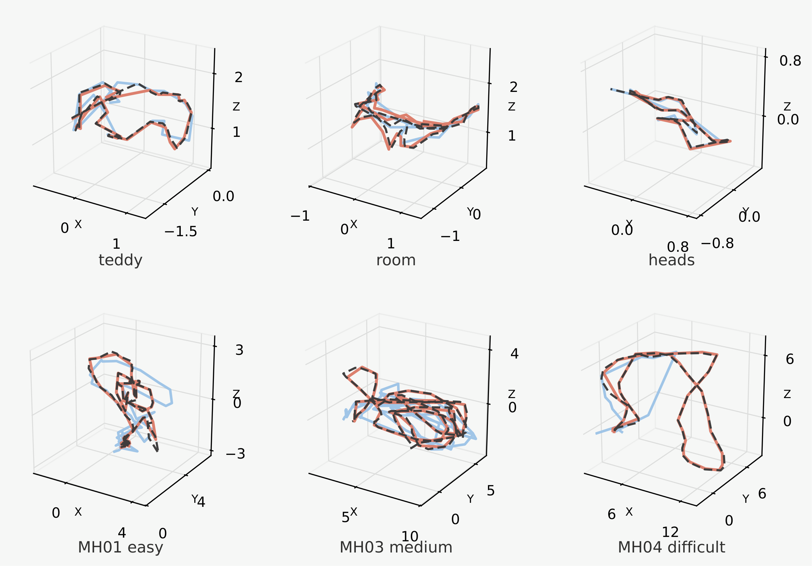

Geometric Foundation Models (GFMs) have recently advanced monocular SLAM by providing robust, calibration-free 3D priors. However, deploying these models on dense video streams introduces significant computational redundancy. Current GFM-based SLAM systems typically rely on post-hoc keyframe selection. Because of this, they must perform expensive dense geometric decoding simply to determine if a frame contains novel geometry, resulting in late rejection and wasted computation. To mitigate this inefficiency, we propose LeanGate, a lightweight feed-forward frame-gating network. LeanGate predicts a geometric utility score to assess a frame's mapping value prior to the heavy GFM feature extraction and matching stages. By serving as a predictive plug-and-play module, our approach bypasses over 90% of redundant frames. Evaluations on standard SLAM benchmarks demonstrate that LeanGate reduces tracking FLOPs by more than 85% and achieves a 5x end-to-end throughput speedup. Furthermore, it maintains the tracking and mapping accuracy of dense baselines.

Recently, 3D Geometric Foundation Models (GFMs) have emerged as robust, data-driven alternatives for visual perception. Consequently, they offer highly stable front-ends for tracking and mapping in systems like MASt3R-SfM and MASt3R-SLAM. Yet, current GFM-based SLAM systems process dense temporal streams, incurring heavy encoding and decoding costs on nearly every frame. For instance, in MASt3R-SLAM, dense feature extraction accounts for over 50% of the runtime on a 15 FPS stream. This exposes a critical system bottleneck where keyframe selection relies on post-hoc evaluation: the system must execute the computationally expensive dense geometric decoding process simply to determine if a frame actually contains novel geometry. Consequently, this architectural flow leads to late rejection and wasted compute on highly redundant frames.


Our approach moves keyframe selection from an expensive post-hoc decision to a fast feed-forward prediction. Instead of sending every incoming frame through the full dense geometry pipeline, we learn to estimate its geometric utility in advance using a lightweight student model distilled from MASt3R-SLAM. The score reflects how much useful geometric information a frame contributes relative to the latest keyframe, capturing both reliable matching and scene coverage. By predicting this utility before reconstruction, our system can filter out low-value frames early and reserve heavy computation for frames that matter most.
Built on top of FLARE's camera-aware decoder tokens, our model leverages an internal geometric representation of image pairs and refines the predicted utility through an iterative overlap head. Training is driven by high-quality pseudo-labels generated from ScanNet++ with the original MASt3R-SLAM scoring rule, allowing the student to inherit strong geometric judgment without reproducing the full teacher pipeline. At inference time, the model scores each frame in a single forward pass and decides whether it should enter the SLAM backend, enabling a slimmer and more efficient system that cuts unnecessary computation and energy overhead while maintaining strong tracking performance.

Core results across datasets comparing trajectory accuracy and computational efficiency. For DROID-SLAM, we report both single-GPU and parallel-mode profiling on the same device using official settings.
| Dataset | Model | Downsample | ATE [cm] ↓ | Time [s] ↓ | Calculations [TFLOPs] ↓ | ||
|---|---|---|---|---|---|---|---|
| Frame Select | SLAM | Total | |||||
| TUM RGB-D | DPV-SLAM | 1× | 7.6 | 43.79 | --- | --- | --- |
| DROID-SLAM | 1× | 3.8 | 41.78/39.56 | --- | --- | --- | |
| MASt3R-SLAM | 2× | 3.00 | 74.95 | --- | 6698.55 | 6698.55 | |
| LeanGate | 15.58× | 2.56 | 18.18 | 532.05 | 461.41 | 993.46 | |
| EuRoC MAV | DPV-SLAM | 2× | 2.4 | 122.15 | --- | --- | --- |
| DROID-SLAM | 2× | 2.2 | 127.45/103.68 | --- | --- | --- | |
| MASt3R-SLAM | 2× | 4.09 | 189.50 | --- | 20835.09 | 20835.09 | |
| LeanGate | 18.60× | 4.90 | 44.63 | 1592.16 | 1206.14 | 2798.31 | |
| 7-Scenes | DPV-SLAM | 2× | 5.4 | 38.44 | --- | --- | --- |
| DROID-SLAM | 2× | 4.9 | 41.29/40.75 | --- | --- | --- | |
| MASt3R-SLAM | 2× | 4.71 | 66.46 | --- | 4978.32 | 4978.32 | |
| LeanGate | 32.26× | 4.61 | 12.64 | 318.75 | 174.41 | 493.16 | |
Reconstruction quality under different downsampling strategies on TUM RGB-D, EuRoC MAV, and 7-Scenes. We compare LeanGate against uniform striding; metrics include Completion (Comp), Chamfer distance, and F-score at 2 cm and 5 cm. Δ% denotes change relative to the 1× baseline; LeanGate preserves quality with 16×-32× fewer frames, approaching the 2× stride baseline.
| Dataset | Method | Downsample | Comp ↓ (Δ% ↑) | Chamfer ↓ (Δ% ↑) | F@2cm ↑ (Δ% ↑) | F@5cm ↑ (Δ% ↑) |
|---|---|---|---|---|---|---|
| TUM RGB-D | DROID-SLAM | 1× | 0.631 | 0.355 | 0.076 | 0.184 |
| MASt3R-SLAM | ||||||
| All | 1× | 0.107 | 0.143 | 0.204 | 0.425 | |
| Stride 2 | 2× | 0.129 (-20.6) | 0.145 (-1.4) | 0.212 (+3.9) | 0.433 (+1.9) | |
| Stride 15 | 15× | 0.545 (-409.3) | 0.393 (-174.8) | 0.188 (-7.8) | 0.368 (-13.4) | |
| LeanGate | 16× | 0.160 (-49.5) | 0.149 (-4.2) | 0.202 (-1.0) | 0.422 (-0.7) | |
| EuRoC MAV | DROID-SLAM | 2× | 1.257 | 0.705 | 0.023 | 0.133 |
| MASt3R-SLAM | ||||||
| All | 1× | 0.271 | 0.274 | 0.030 | 0.221 | |
| Stride 2 | 2× | 0.272 (-0.4) | 0.272 (+0.7) | 0.031 (+3.3) | 0.224 (+1.4) | |
| Stride 15 | 15× | 0.370 (-36.5) | 0.316 (-15.3) | 0.030 (+0.0) | 0.206 (-6.8) | |
| LeanGate | 18× | 0.348 (-28.4) | 0.298 (-8.8) | 0.031 (+3.3) | 0.219 (-0.9) | |
| 7-Scenes | DROID-SLAM | 2× | 0.401 | 0.237 | 0.170 | 0.385 |
| MASt3R-SLAM | ||||||
| All | 1× | 0.149 | 0.144 | 0.263 | 0.476 | |
| Stride 2 | 2× | 0.150 (-0.7) | 0.143 (+0.7) | 0.272 (+3.4) | 0.483 (+1.5) | |
| Stride 15 | 15× | 0.157 (-5.4) | 0.143 (+0.7) | 0.257 (-2.3) | 0.470 (-1.3) | |
| LeanGate | 32× | 0.140 (+6.0) | 0.141 (+2.1) | 0.264 (+0.4) | 0.493 (+3.6) | |
Qualitative 3D trajectory comparisons on TUM-RGBD (fr1-teddy, fr1-room), 7-Scenes (heads-seq01), and EuRoC (MH01 easy, MH03 medium, MH04 difficult). Black denotes ground truth; orange shows Sim(3)-aligned estimates from LeanGate-filtered RGB streams; blue shows Sim(3)-aligned stride-15 results at an equivalent or smaller downsampling rate, illustrating our method's tracking consistency under aggressive frame pruning.

Acknowledgement. We adapt this webpage template from DreamBooth.